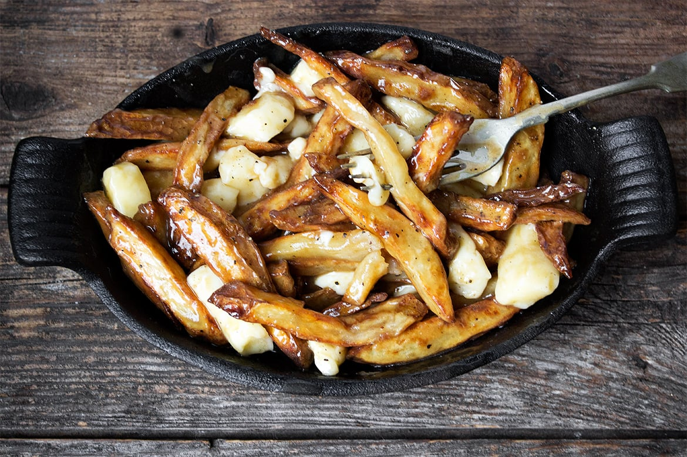

Authentic Canadian Poutine
Authentic Canadian Poutine featuring deep-fried fries, poutine gravy and white cheddar cheese curds all tossed
together.
Do be careful with deep frying. A proper deep fryer is recommended.

Description
Poutine is a wonderful and delicious concoction of fries, gravy and cheese curds and is one of the most
quintessential Canadian dishes!
So if you already know how great this dish is and are just looking for a great, authentic poutine recipe to make
at home, skip on down to the recipe.
Key Notes
- Preparation Time; 30 Minutes
- Cooking Time: 30 Minutes
- Serving: 2 people
Ingredients
Poutine Gravy
- 2 Tbsp cornstarch
- 1.33 Tbsp water
- 4 Tbsp unsalted butter
- 0.17 cup unbleached all purpose flour
- 13.33 oz beef broth
- 6.67 oz chicken broth
- Pepper, to taste
For Deep Fried Fries
- 1.33 lbs Russet potatoes, (3-4 medium potatoes)
- Peanut or other frying oil
Toppings
- 0.67 - 1 cups white cheddar cheese curds
- (Or torn chunks of mozzarella cheese would be the closest substitution)
Instructions
- Prepare the gravy: In a small bowl, dissolve the cornstarch in the water and set aside.
- In a large saucepan, melt the butter. Add the flour and cook, stirring regularly, for about 5 minutes, until
the mixture turns golden brown.
- Add the beef and chicken broth and bring to a boil, stirring with a whisk. Stir in about HALF the cornstarch
mixture and simmer for a minute or so. If you'd like your gravy thicker, add a more of the cornstarch
mixture, in small increments, as needed, to thicken.
- Season with pepper. Taste and add additional salt, if necessary, to taste. Make ahead and re-warm or keep
warm until your fries are ready.
- For Deep-Fried Fries: Prepare your potatoes and cut into 1/2-inch thick sticks. Place into a large bowl and
cover completely with cold water.
- Allow to stand at least one hour or several hours. When ready to cook, heat your oil in your deep fryer or
large, wide, heavy cooking pot to 300° F.
- Remove the potatoes from the water and place onto a sheet of paper towel. Blot to remove as much excess
moisture as possible.
- Add your fries to the 300°F oil and cook for 5-8 minutes, just until potatoes are starting to cook but are
not yet browned.
- Remove potatoes from oil and scatter on a wire rack. Increase oil temperature to 375°F Once oil is heated to
that temperature, return the potatoes to the fryer and cook until potatoes are golden brown. Remove to a
paper towel-lined bowl.
- To Prepare Poutine: Add your fried or baked fries to a large, clean bowl. Season lightly with salt while
still warm. Add a ladle of hot poutine gravy to the bowl and using tongs, toss the fries in the gravy. Add
more gravy, as needed to mostly coat the fries.
- Add the cheese curds and toss with the hot fries and gravy. Serve with freshly ground pepper. Serve
immediately.